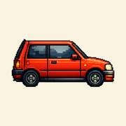
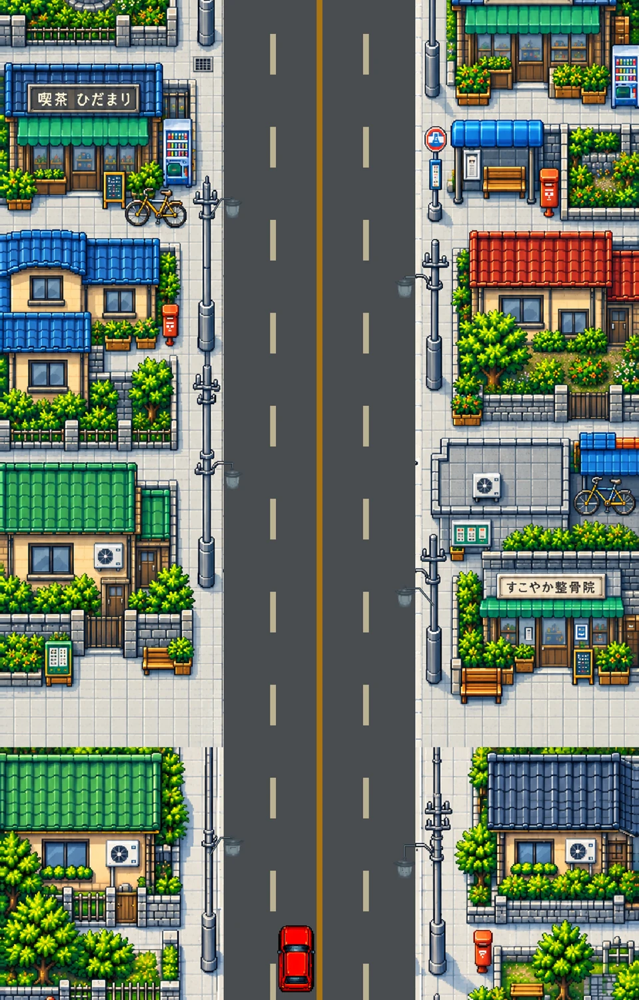
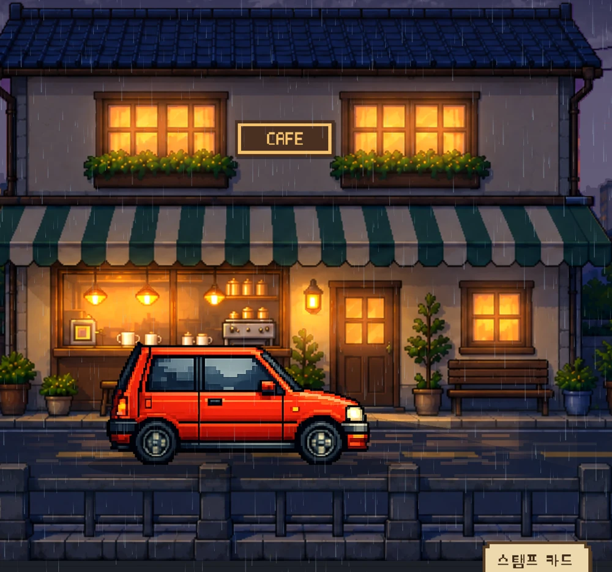
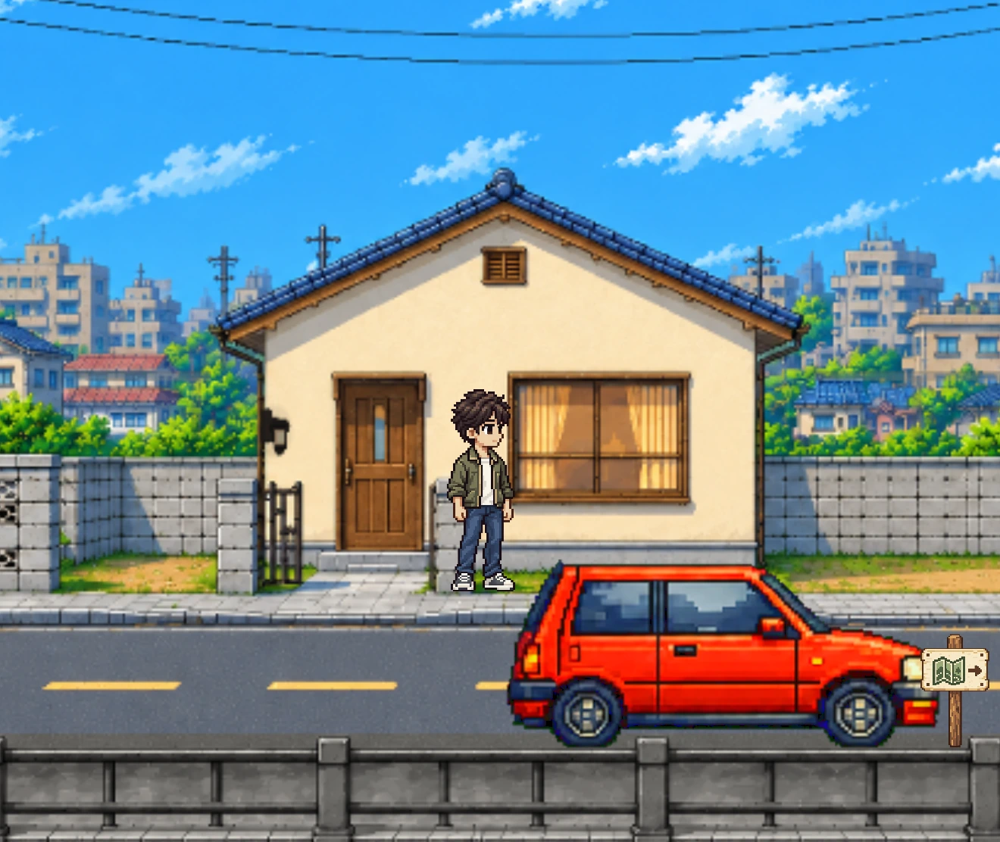
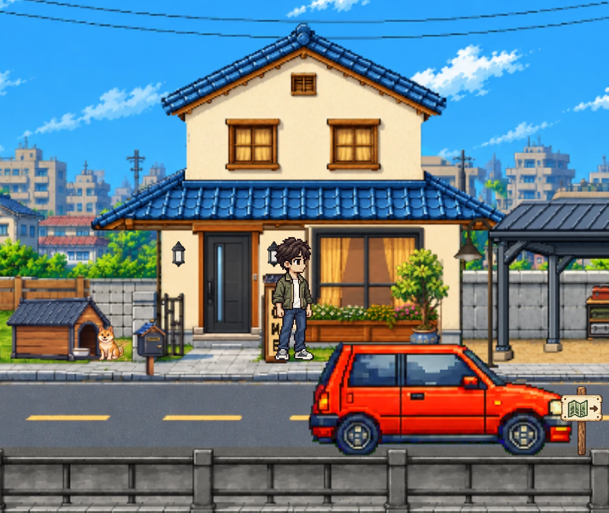
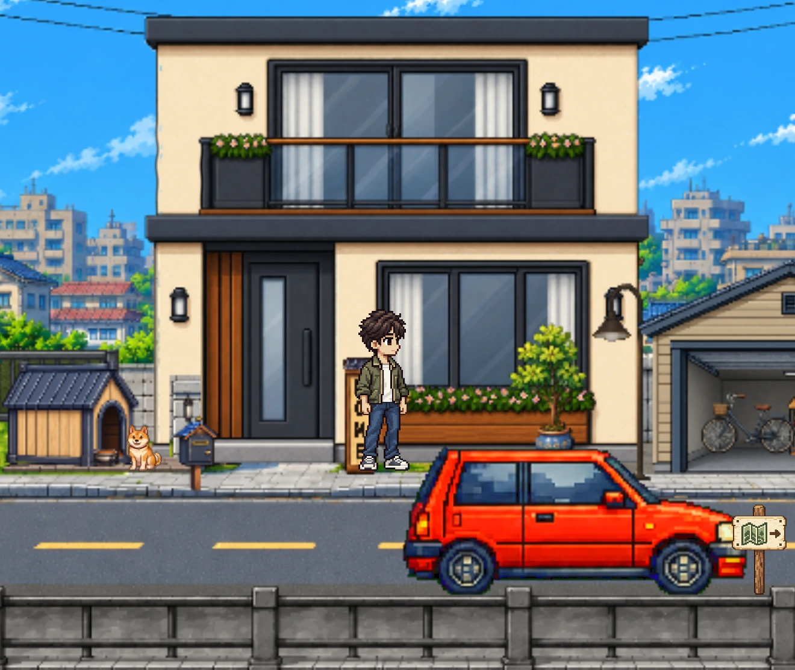

時間を決めて、出発
横から見るSide Viewと、上から眺めるTop View。晴れた昼も、雨の夜も。気分に合った景色と一緒に集中。

Dayroad.ドット絵の街を走る、集中タイマー。
タイマーをつけて、ドットの街へ。
カフェでひと休みしたら、
自分だけの家を少しずつ育てよう。
FOCUS / DRIVE / UNWIND
01 / A FOCUS TIMER, WITH A VIEW
勉強にも、読書にも。集中する時間を決めると、車がドットの街を走り出します。細かな操作をせずに、自分のやることに集中できるように。
集中した時間が、自分だけの世界に少しずつ残っていきます。
横から見るSide Viewと、上から眺めるTop View。晴れた昼も、雨の夜も。気分に合った景色と一緒に集中。
集中のあとはカフェへ。休憩タイマーをセットして、音楽や環境音とともにひと息つけます。
集中時間がたまると、スタンプを獲得。集めたスタンプを使って、ホームの次の段階を自分で解放します。


02 / MAKE IT YOUR HOME
小さな始まりから、自分だけの場所へ。35段階の変化を、一つずつ楽しんでください。



累計25分の集中 → スタンプ1個 → 貯めたスタンプでHomeを育てる実際のアプリの0・20・35段階です。段階ごとに必要な数のスタンプを貯め、使って解放します。
03 / THE LITTLE THINGS
選んだアプリやカテゴリをブロックする任意の機能です。スクリーンタイムの許可が必要です。1.0ではWebサイトのブロックに対応していません。
ライブアクティビティで残り時間を確認し、終了通知を受け取れます。動作は端末の通知設定によって異なります。
積み重ねた集中の記録を振り返り、解放した車やアバターのカスタマイズで、自分らしさを添えられます。
個人のiCloudで記録を同期し、JSONで書き出し・読み込みができます。購入の復元と記録の復元は別の操作です。
04 / FREE TO WANDER
Free Drive
時間制限なく景色を楽しめる、自由なドライブ。
Focus Drive Pass
日本エリアのFocus Driveを累計75分まで無料で体験できます。その後は、一度の購入でこのモードを引き続き利用できます。
LAなど今後の追加エリアは別売りを予定しており、現在のパスには含まれません。公開時期は未定です。
DAYROAD / APP PREVIEW
実際のアプリの映像で見る、25秒の旅。音声は再生後にオンにできます。
25 SEC / JA
05 / BEFORE YOU GO
はい。DayroadはApp Storeで配信中です。このページのダウンロードボタンから、公式App StoreでiPhoneやiPadにインストールできます。
いいえ。Focus Drive Passは、ご自身で選んで購入する買い切り商品です。体験終了後もFree Driveは無料で利用できます。
累計の集中時間に応じてスタンプを獲得し、ホームの成長に使います。Free Driveでは集中の報酬は獲得できません。
パスは購入時のAppleアカウントで復元します。記録・スタンプ・ホームの進行は、個人のiCloud同期かJSONバックアップで別途復元します。先に既存の記録をバックアップしてください。
iPhoneとiPadで、韓国語・日本語・英語に対応しています。Focus Lockやライブアクティビティなどは対応端末とシステムの許可が必要です。
App Storeで配信中
DayroadをApp Storeでダウンロード。
iPhoneやiPadで、自分だけのドットの旅を始めよう。